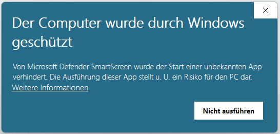
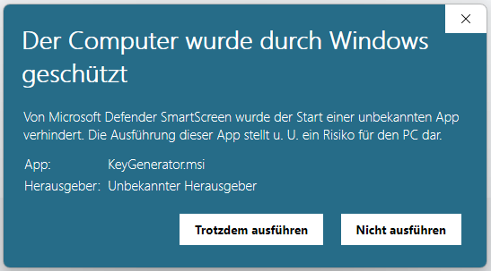
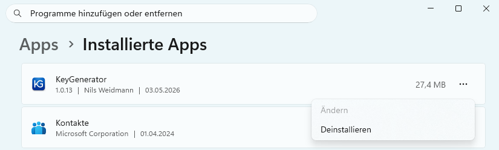

Installation
Voraussetzungen
Für die Installation und den Betrieb des KeyGenerators wird benötigt:
- Windows 10 oder neuer (64-Bit)
- .NET 8.0 Desktop Runtime oder neuer
Falls .NET 8.0 noch nicht installiert ist, wird es während der Installation des KeyGenerators automatisch nachgeladen.
Installationsschritte
Der Installer kann hier heruntergeladen werden:
Alternative Downloadmöglichkeit als ZIP-Archiv:
- 1 Die heruntergeladene Datei KeyGenerator.msi ausführen. (Bei ZIP-Download: das Archiv zuerst entpacken, dann die enthaltene MSI-Datei ausführen.)
- 2 Den Anweisungen des Installationsassistenten folgen und einen Installationsordner auswählen.
- 3 Nach abgeschlossener Installation kann der KeyGenerator über das Startmenü oder die erzeugte Desktop-Verknüpfung gestartet werden.
Hinweis: Windows SmartScreen
Beim Ausführen des Installers erscheint möglicherweise folgendes Fenster:

Vorgehen zum Fortfahren:
- 1 Im Warnfenster auf „Weitere Informationen" klicken.
- 2 Anschließend auf „Trotzdem ausführen" klicken.
- 3 Die Installation läuft danach normal weiter.

Integrität der Installationsdatei prüfen (optional)
Zu jeder Version wird neben dem Installer auch eine Prüfsummendatei (checksum.txt) veröffentlicht. Sie enthält SHA-256-Hashes für KeyGenerator.msi und KeyGenerator.zip und ermöglicht es zu verifizieren, dass die heruntergeladene Datei vollständig und unverändert ist – also weder während des Downloads beschädigt noch nachträglich manipuliert wurde.
Die Prüfsummendatei kann auf der Releases-Seite heruntergeladen werden. Zur Überprüfung beide Dateien in denselben Ordner legen und in PowerShell folgenden Befehl ausführen (je nach heruntergeladener Datei):
# Für die MSI-Datei: (Get-FileHash KeyGenerator.msi -Algorithm SHA256).Hash # Für die ZIP-Datei: (Get-FileHash KeyGenerator.zip -Algorithm SHA256).Hash
Der angezeigte Wert muss mit dem entsprechenden Hashwert in checksum.txt übereinstimmen. Weichen sie voneinander ab, sollte die Datei erneut heruntergeladen werden.
Deinstallation
Der KeyGenerator kann regulär über die Windows-Einstellungen deinstalliert werden. Navigieren Sie hierzu in den Einstellungen zu Apps → Installierte Apps (oder suchen Sie alternativ nach "Programme hinzufügen oder entfernen"). Suchen Sie anschließend in der Liste der installierten Programme nach „KeyGenerator“ und wählen Sie Deinstallieren.
